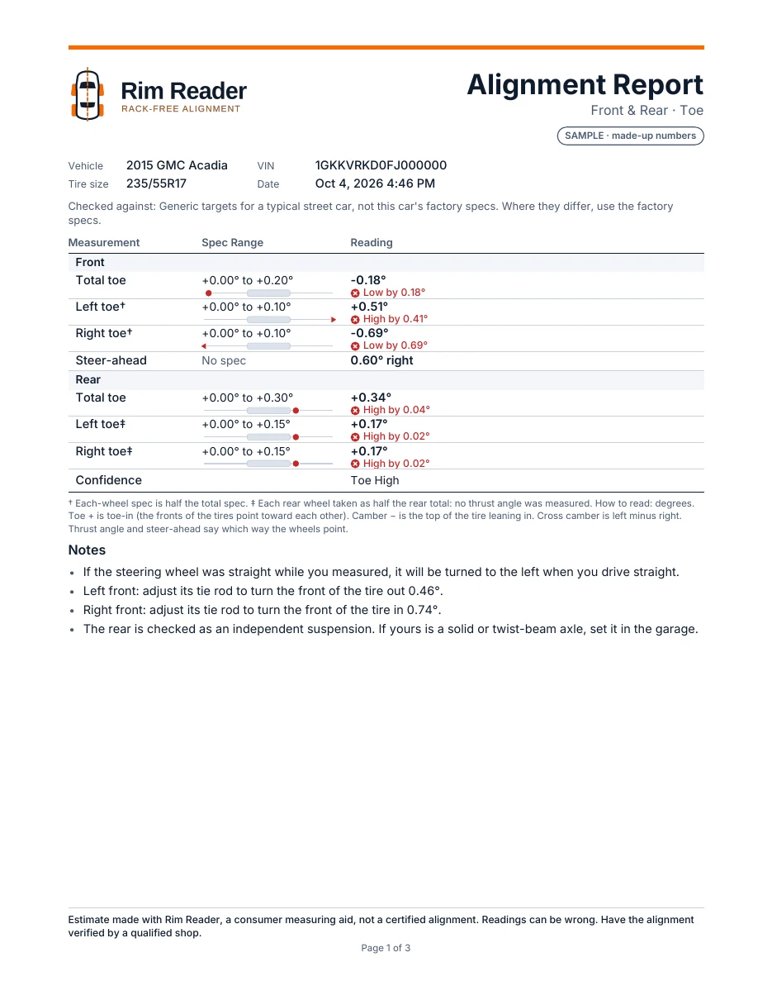
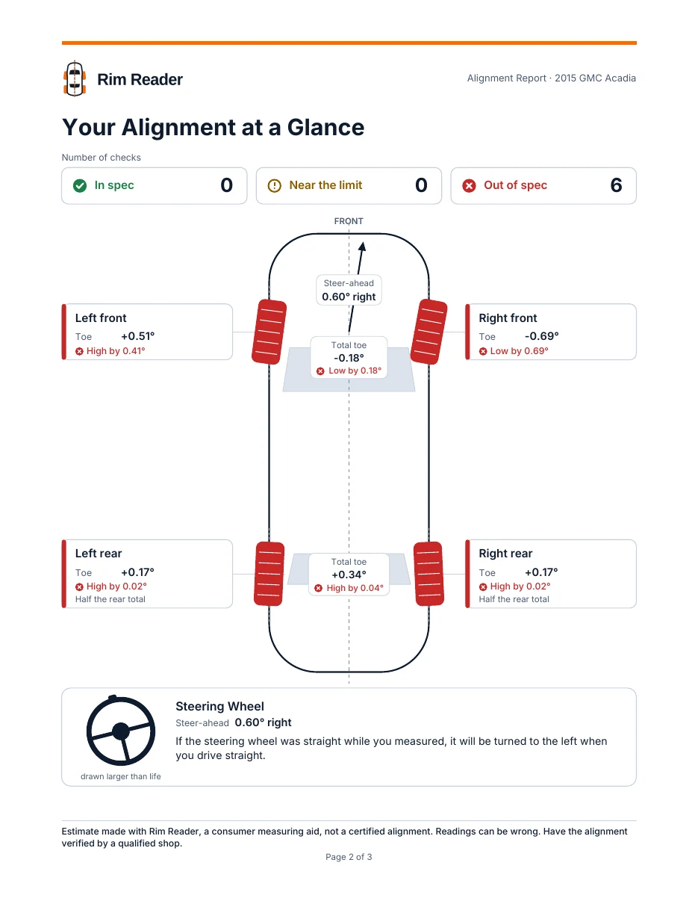
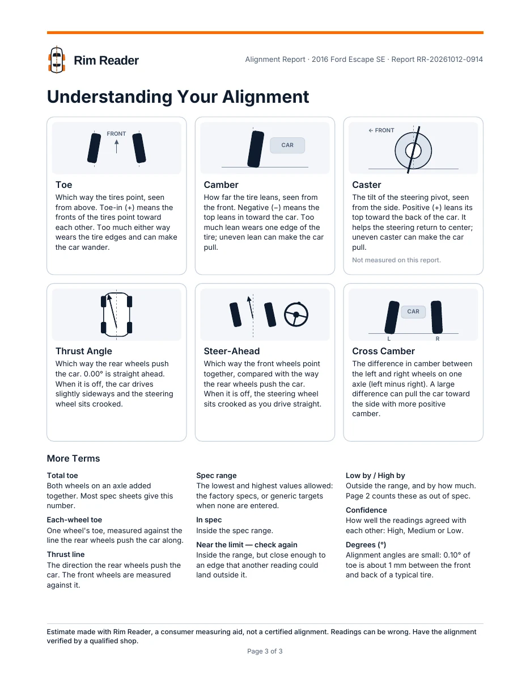
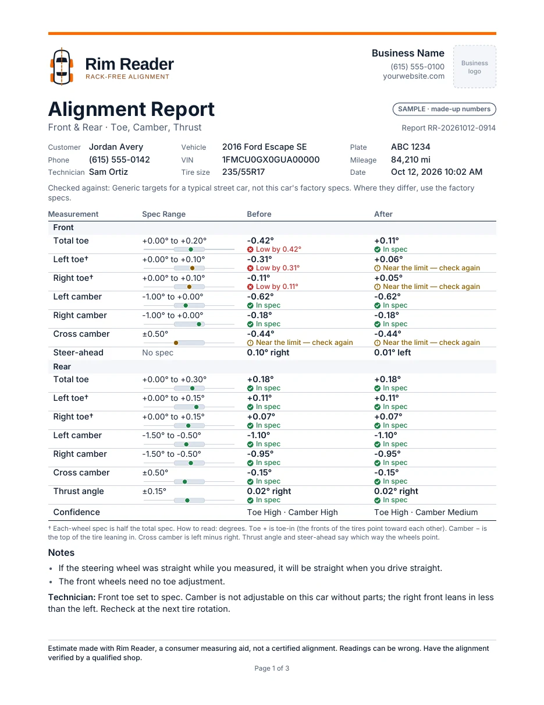
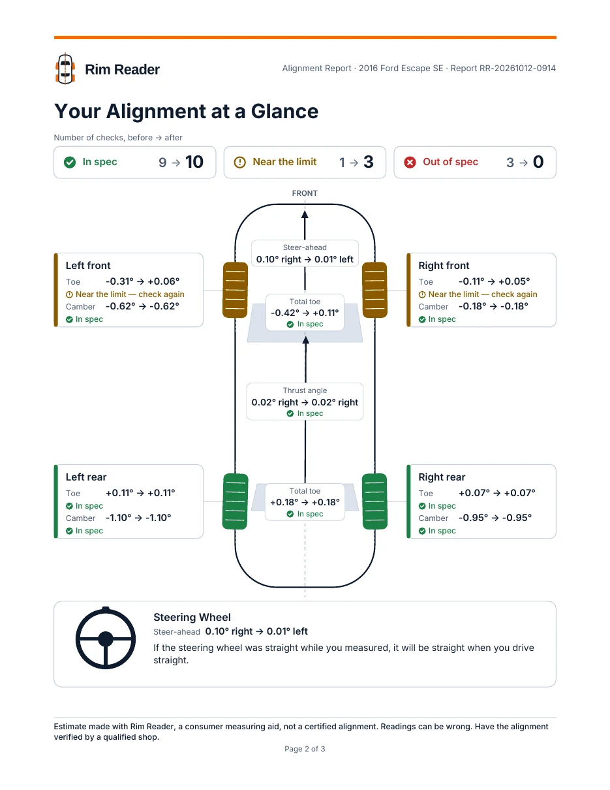
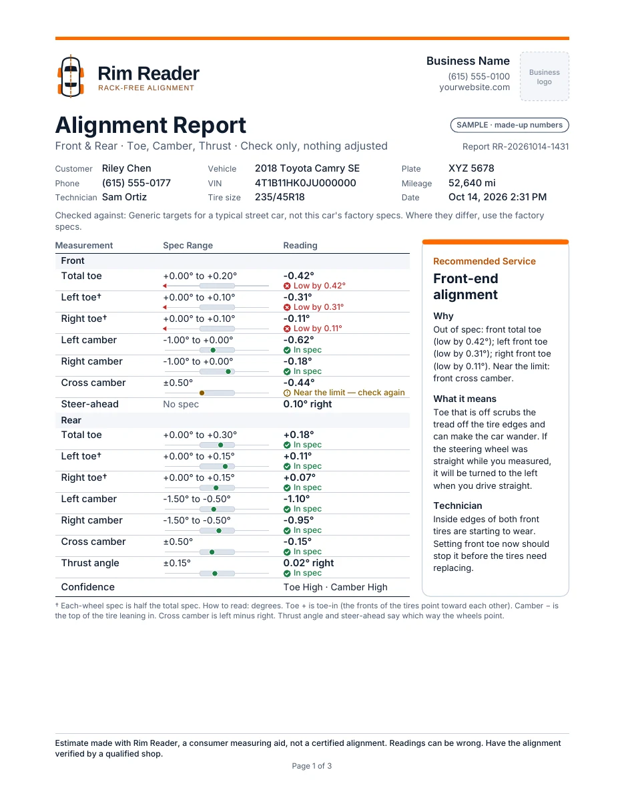

Reports and sharing
Share a picture of a result in seconds, or make a three-page PDF report to print or send.
Share a picture
On a finished, saved lap, or a reading opened from History, tap Share. It sends a picture of the car drawing and the result card through your phone’s share sheet: email, messages, Drive. Nothing leaves the phone unless you share it.
Make a PDF report
Tap PDF. The app makes an Alignment Report, saves it in your phone’s Download/Rim Reader folder and opens it, ready to share or print. The Files app finds it again later. Paper is US Letter in the US, Canada, Mexico and the Philippines, and A4 elsewhere.
- Page 1 is laid out like a shop’s printout: vehicle, tire size, VIN and date; what the numbers were checked against; every number with its spec range, a small bar and its status in words; the confidence; and notes on the steering wheel, tie rods and rear wheels.
- Page 2, “Your Alignment at a Glance”: counts of In spec, Near the limit and Out of spec; the car from above with each tire coloured and turned; thrust and steer-ahead arrows; and how the steering wheel will sit.
- Page 3, “Understanding Your Alignment”: picture cards for toe, camber, caster, thrust angle, steer-ahead and cross camber, and more terms.
Every page ends with the estimate notice. Your own notes aren’t printed on a personal report; the VIN is.



For mobile mechanics and shops
Coming with the shop plans: your shop’s name, logo, phone and website on every report, with a report number; customer, phone, plate and mileage on each vehicle; before and after side by side; and a shop check, a check-only report with a recommended service, why, and what it means. Shop details stay on the phone.



The samples were drawn from the report’s design, with made-up names and numbers. The app’s own reports may differ in small details.